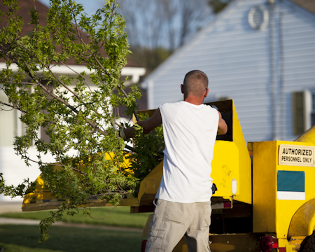

Enhance the beauty and health of your trees and shrubbery with regular pruning. We remove dead and dying branches due to disease, insert infestation and other adverse conditions.
We perform professional tree removal using proven methods and top equipment, guarding against damage to your lawn, home, or garden. We're experts in the fields with 20 years of experience.
No one plans for storm damage. Call us after the storm has cleared and we'll soon be out to give you an estimate and facilitate your insurance claim. We are fully licensed and can get to work immediately with the removal of debris to limit existing dangers before returning to do a complete take down and repair.